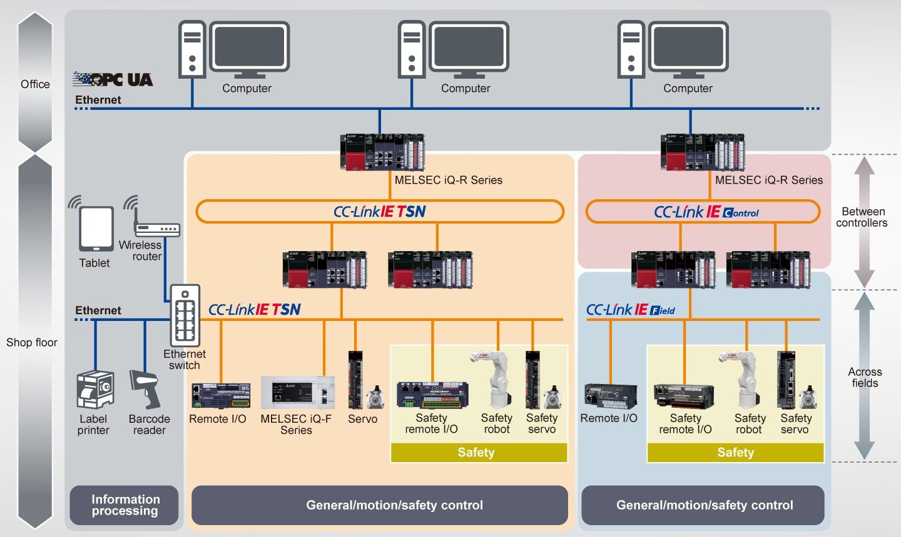
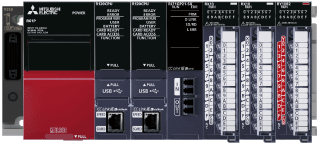
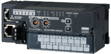
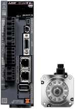
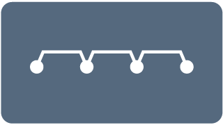
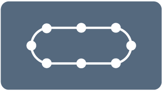

Controllers MELSEC iQ-R Series Product features -Network-

Network module
The network module lineup fulfills new needs for industrial networks: system-wide optimization including high-speed control, large capacity data management, flexible wiring, and easier setup/maintenance required in manufacturing.


Open integrated networking across the manufacturing enterprise
- Integrates IT system information communications and real time control communications on the same network
- Highly accurate time synchronization within ±1 µs is possible between connected stations, allowing precise time-series analysis when an error occurs
- High-precision motion control with minimum communication cycle time of just 31.25 µs*1
- *1.This value is achieved when fast operation mode of the motion module (RD78GH) is used. For details, please refer to the MELSEC iQ-R Motion Module User's Manual (Application) (IB-0300411ENG).
High-speed, large-capacity, and highly-reliable distributed control network for controllers
- Realizes 128K word (maximum link points) large data bandwidth and 1 Gbps high-speed communication
- Multi-functions such as dual-loop optical network and external power supply enable highly-reliable distributed control system
Field network realizing highly-flexible wiring
- Enables safety control and motion control as well as communications between multiple controllers and I/O control
- Realizes flexible wiring topologies according to the layout of production lines, equipment, and devices
Network features
Networks best for each application can be selected.*2
| Item | ||||||
|---|---|---|---|---|---|---|
| Communication cable | Ethernet cable |
Ethernet cable |
Optical fiber cable |
Ethernet cable |
||
| Main applications |  Between controllers |
● | ● | ● | ||
| Across fields |  General control |
● | - | ● | ||
|  Motion control |
● | - | ● | |||
Safety control |
● | - | ● | |||
| Transmission speed | 1 Gbps/100 Mbps | 1 Gbps | 1 Gbps | |||
| Max. number of connectable stations | 121*3 | 120 | 121*3 | |||
| Mixed TCP/IP communication | ● | - | - | |||
| Maximum link points per network |
Remote input (RX), remote output (RY) |
16384 points, 2KB | - | 16384 points, 2KB | ||
| Remote register (RWw, RWr) | 8192 points, 16KB | - | 8192 points, 16KB | |||
| Link relay (LB) | 32768 points, 4 KB For extended points: 131072 points, 16 KB |
32768 points, 4KB For extended points: 65536 points, 8KB |
- | |||
| Link register (LW) | 16384 points, 32 KB For extended points: 524288 points, 1024 KB |
131072 points, 256KB For extended points: 262144 points, 512KB |
- | |||
| Link input (LX), link output (LY) | - | 8192 points, 1KB | - | |||
| Max. station-to-station distance | 100 m | 100 m | 550 m | 100 m | ||
| Network topology /overall cable distance |
 : Line | 12000 m | 11900 m | - | 12000 m | |
|  : Ring | 12100 m | 12000 m | 66000 m | 12100 m | ||
| : Star | Depends on the system configuration |
Depends on the system configuration |
- | Depends on the system configuration |
||
| : Line and star combination |
Depends on the system configuration |
Depends on the system configuration |
- | Depends on the system configuration |
||
- *2.For more information about performance specifications of modules, please refer to relevant product manuals.
- *3.Includes a master station.
Other networks
In addition to CC-Link IE-based networks, various networks are supported.

The lineup also includes modules that support other open networks.
- Ethernet-based network
- Serial-based network

- Others